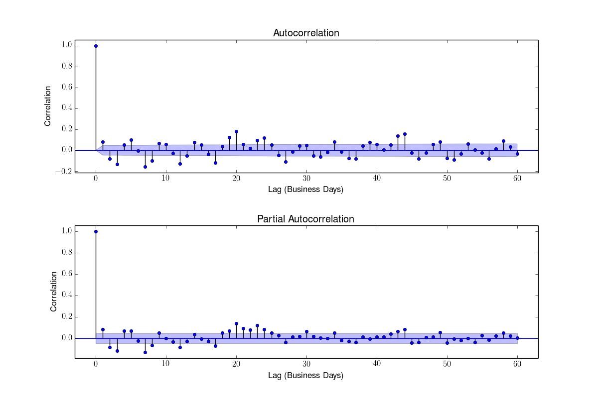
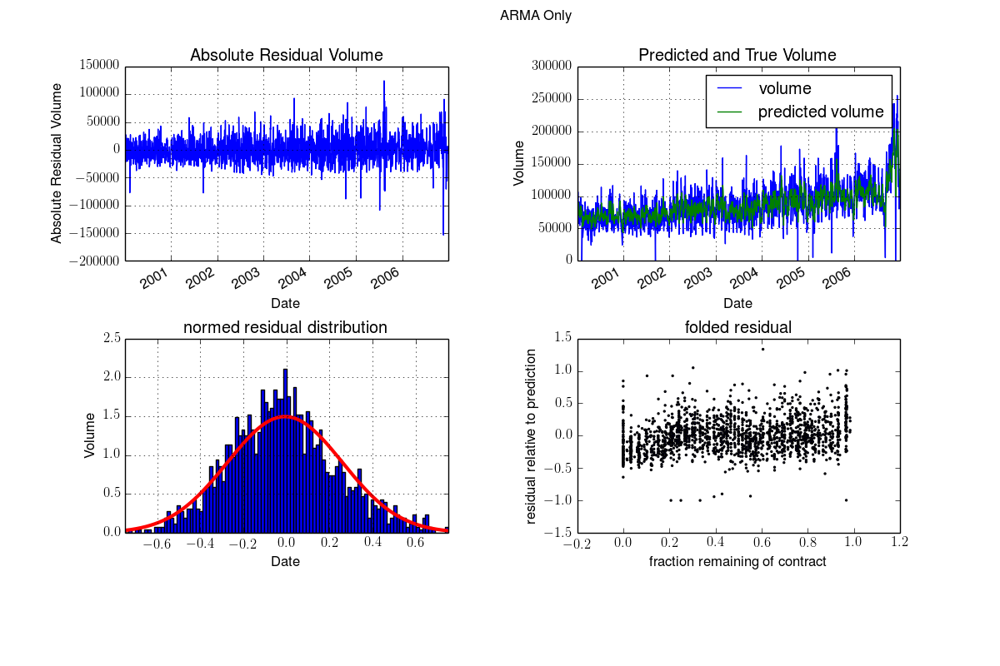
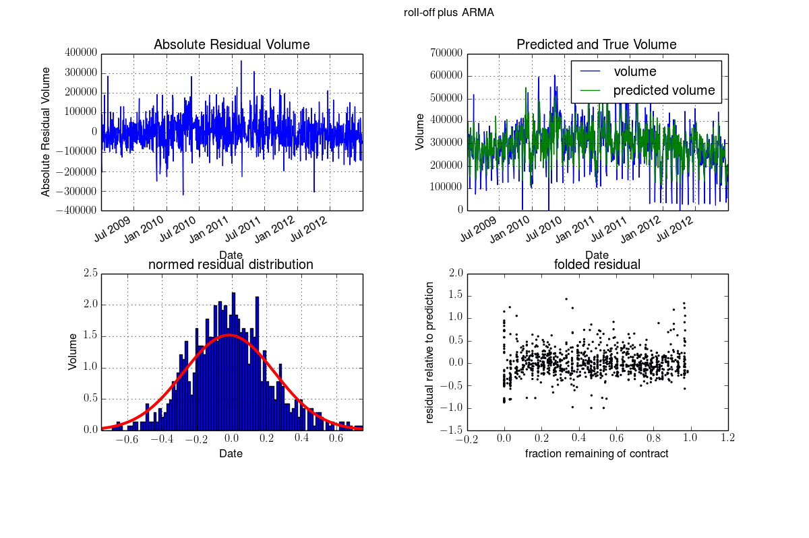
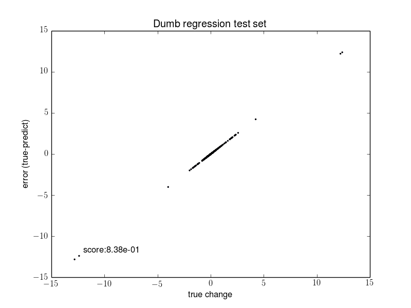
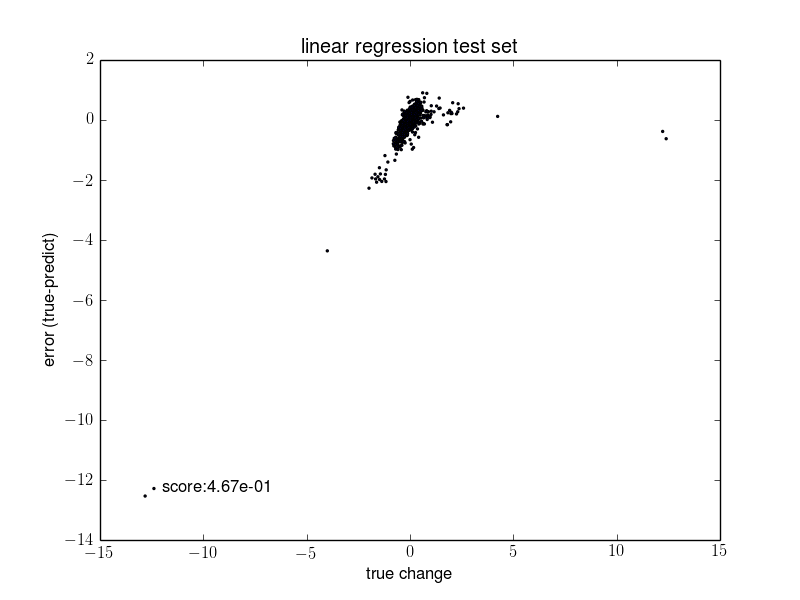
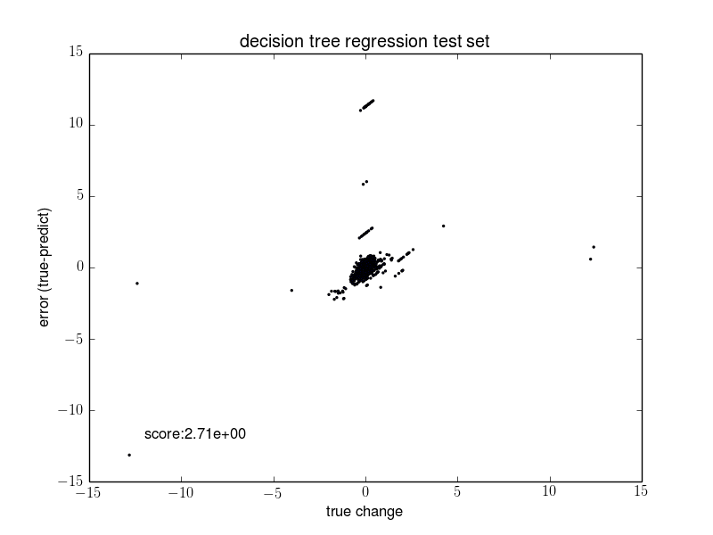
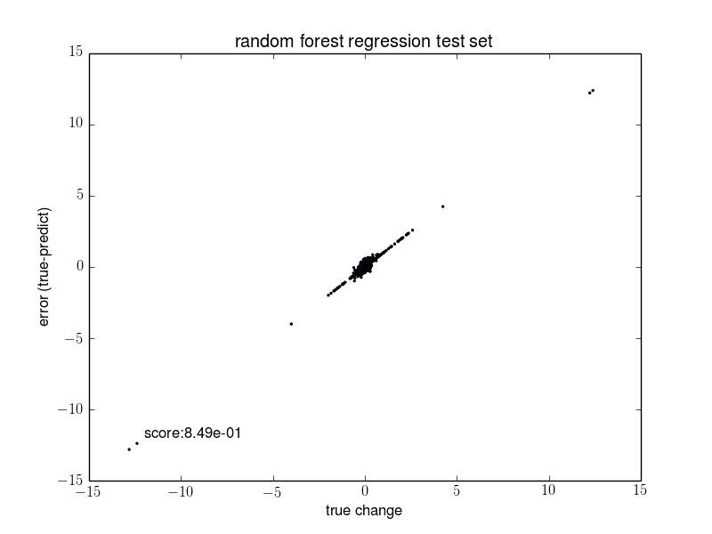
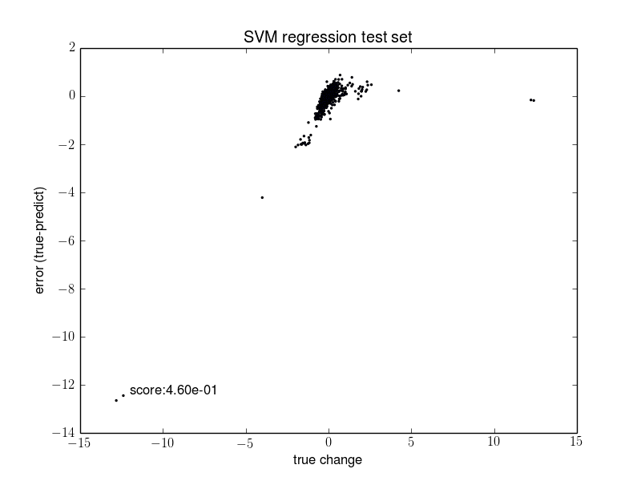

Oil Volume
I used a similar process to model oil volume.
Volume Correlation
First, the autocorrelation and partial autocorrelation should reveal any major trends that we should remove from the time-series.

The partial autocorrelation shows that there is a stong dependence on the most recent days. There is also a correlation at about 20 business days, which will be explained shortly. As our first prediction, we use an ARMA(1,1) model. This model has an autoregressive term for the most recent day in addition to the 1-day moving average (yesterday's volume value).
The partial autocorrelation of the ARMA(1,1) model shows that the 20-day term remains. The 20-day lag corresponds to 1-month intervals (since trading takes place on business days and skips Saturday and Sunday).
If we express the residuals as a fraction of the remaining time in the contract, the data folds up on itself and we can see a trend toward negative residuals at the end of the contract when volume drops as contracts are closed out, which I call roll-off. I fit a decision tree to this behavior and use the resulting predictor to generate a correction term for the ARMA Model. After making this correction the trend is less obvious, although it is hard to remove completely.
Fitted Models
Using the same data sets, factors, and transformations used to predict price, I tried to predict volume. The benchmark model is again the 'dumb' prediction of the average residual value for the entire set. I fit a linear regression model, Decision Tree, Random Forest, and SVM model. The random forest and SVM models were cross-validated to optimize hyperparameters for each model using a grid search of the hyperspace. A comparison of each model is shown below.
   Here the linear and SVM models beat the benchmark. The gain comes from properly identifying and correcting large positive outliers. There may be value in exploring these correctly predicted outliers to see what factor or factors made them predicable events. Any predictive elements could then be incorporated into a trading model.
Results and Future Work
The volume is also difficult to predict in the case of oil futures. If there is some predictive power in GDelt, it is likely at a more refined level than what was used here. The limited descriptions of events (simply two actors and a general description like "US government uses conventional weapons to attack Iraqi rebels") is simply too course to infer the relavence to oil production. Additional information on the events would definitely be required to improve these results. Unfortuantely, the time limitations and computational limitations prevented a more in-depth exploration.